Simple inventory movement accounting
Record receipts, issues, returns and write-offs between your departments and see the balances at any moment. Free, works offline, for Windows, macOS, Linux and Android.
What it can do
Transfers
Every movement of products and materials between departments: receipts from suppliers, issues to consumers, returns, write-offs. Each transfer keeps the balances it leaves behind.
Balances at any moment
Balances of every department and product at the beginning or end of a period or on any date, with or without cost.
Accounting periods
Close a period to fix its transfers, look back at closed periods, reopen the last one if needed.
Export
Export any table to PDF, Excel, Word or OpenDocument; on Android also to CSV.
Barcode scanning (Android)
Scan a barcode or QR code on the product or its packaging to add it to the product name, or to find the product when recording a transfer.
Computer and phone
Move databases between the desktop and Android versions as ZIP files. Before replacing a database, the app warns if changes would be lost.
Backups and sample data
Several databases, backups with restore, undo of the last deletion, and a sample database to try everything right away.
Five languages
English, Ukrainian, German, French and Spanish; light and dark theme.
Screenshots (dark theme)
Computer (Windows, macOS, Linux)
Android
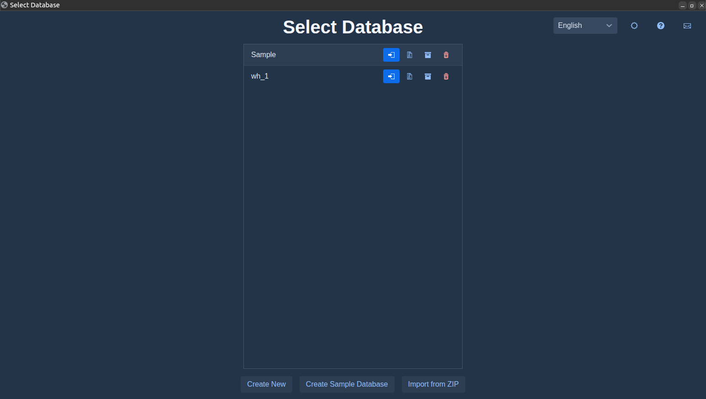
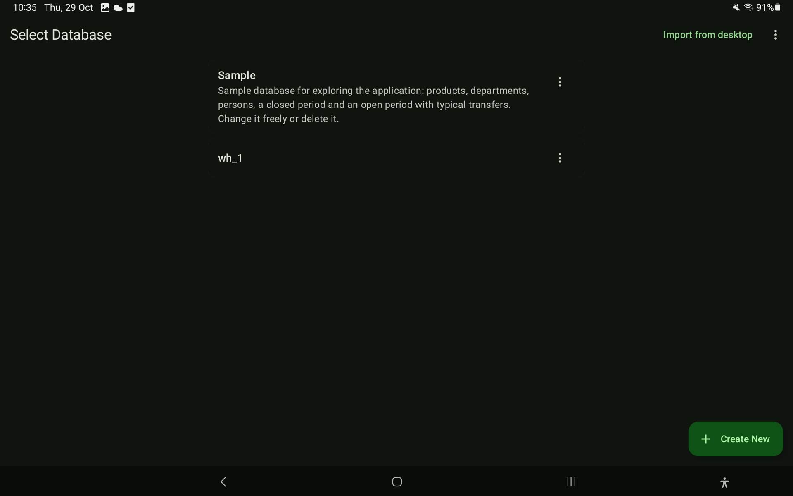
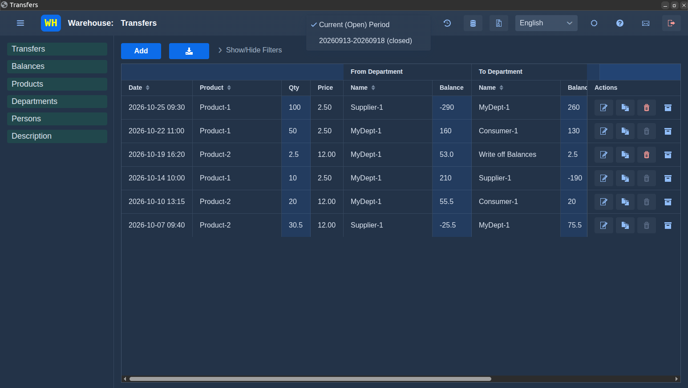
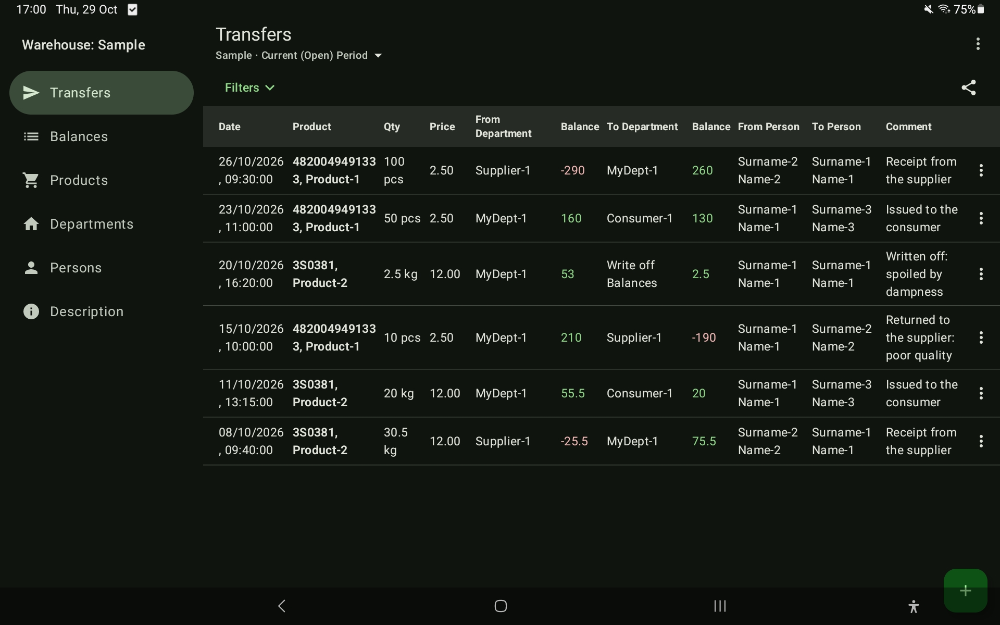
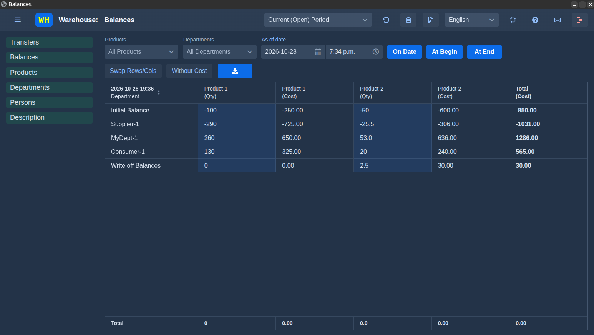
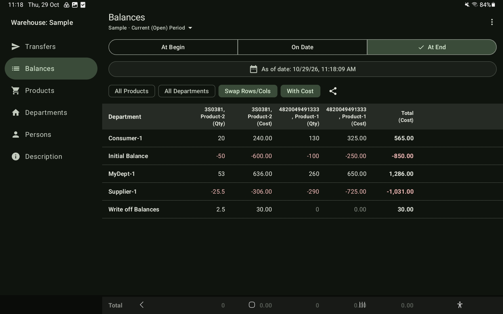
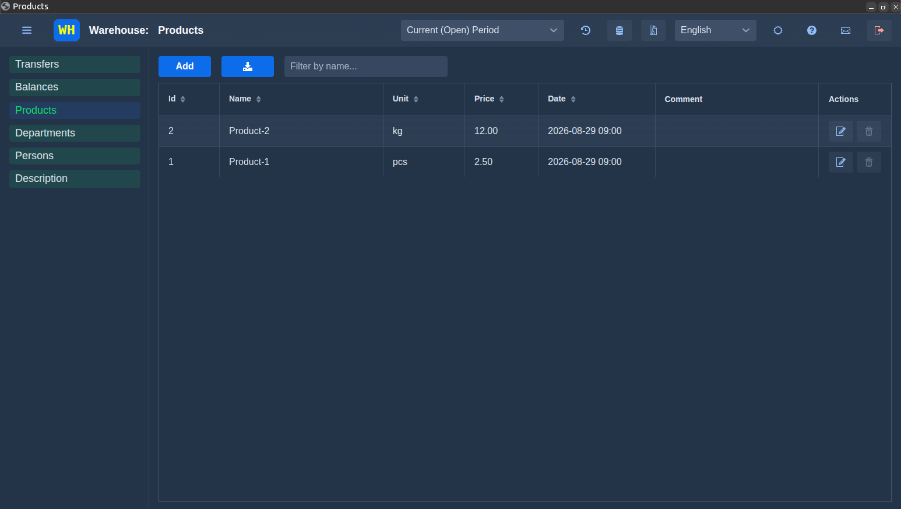
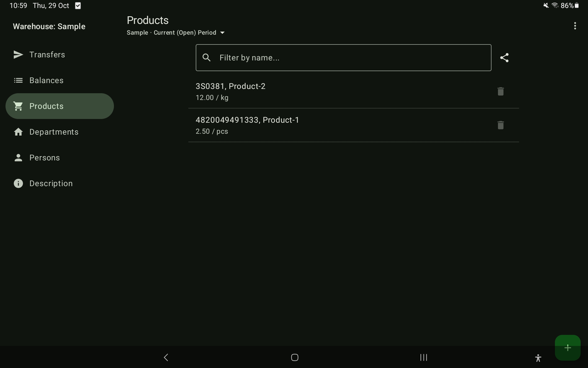
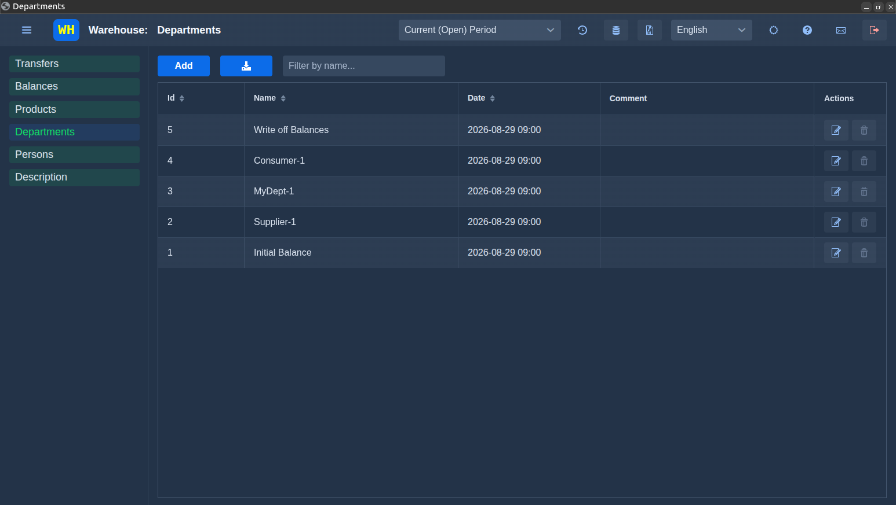
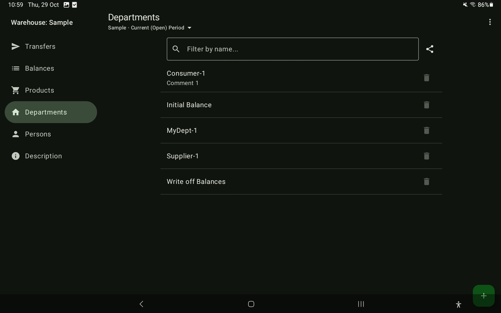
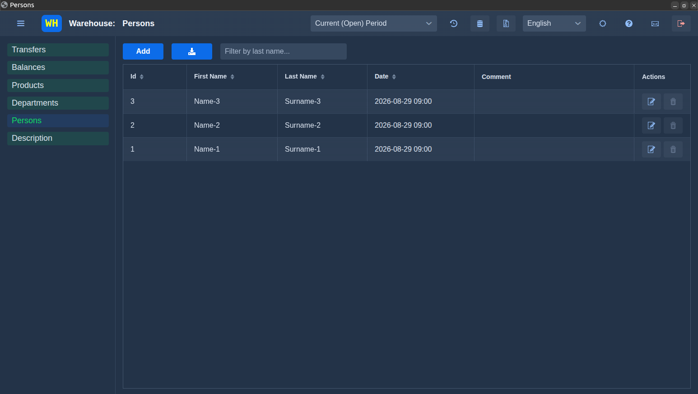
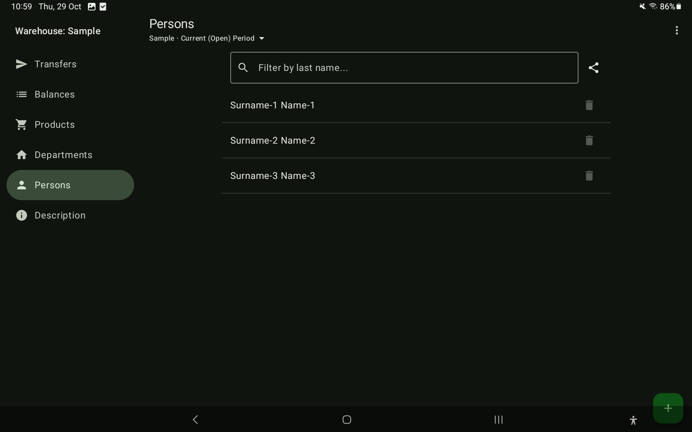
Download
Current version: . The releases pages also list earlier versions and the SHA-256 checksums of the files.
Installation
The installers are free and not signed with paid publisher certificates, so Windows, macOS and Android show a warning the first time. Download only from the links on this page and check the checksum if you like (see below).
Windows
Run the .msi file. If “Windows protected your PC” appears, click “More info” and then “Run anyway”.
macOS
Open the .dmg file and drag Warehouse into Applications. On the first start macOS blocks the app because it is not notarized by Apple: open System Settings › Privacy & Security, scroll down and click “Open Anyway”, then confirm.
Linux
Install the downloaded file in a terminal, from the folder where it is saved:
sudo apt install ./warehouse_*.deb
Android
Open the downloaded .apk file. If Android asks, allow your browser or file manager to install unknown apps. Updates install over the previous version and keep your data.
Uninstalling the app deletes its databases. Before uninstalling, save every database you need with “Export for desktop (ZIP)”.
How the desktop version opens
The desktop version opens in its own window of Google Chrome, Microsoft Edge or Brave, so one of these browsers should be installed (on Linux: Chrome, Chromium or Brave). Without them it opens in Firefox on Windows or in Safari on macOS. The app itself runs only on your computer.
Checking a download (SHA-256)
Compare the result with the checksum listed on the download page:
- Windows (PowerShell):
Get-FileHash .\file.msi - macOS:
shasum -a 256 file.dmg - Linux:
sha256sum file.deb
Your data stays with you
Warehouse works fully offline. There is no account, no advertising, and the app does not collect or send your data: your databases are stored only on your device. On Android, barcode scanning uses Google's scanner from Google Play services where it is available.